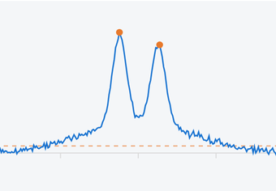
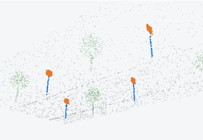
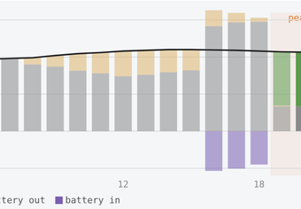
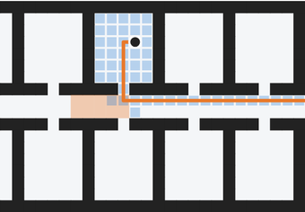
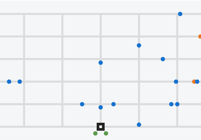
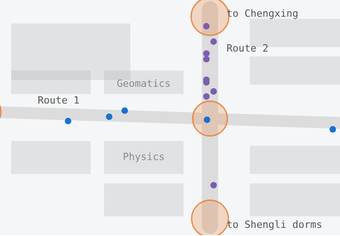
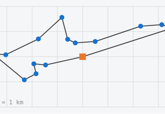
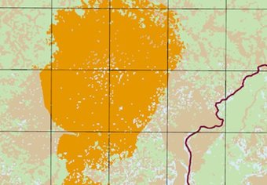
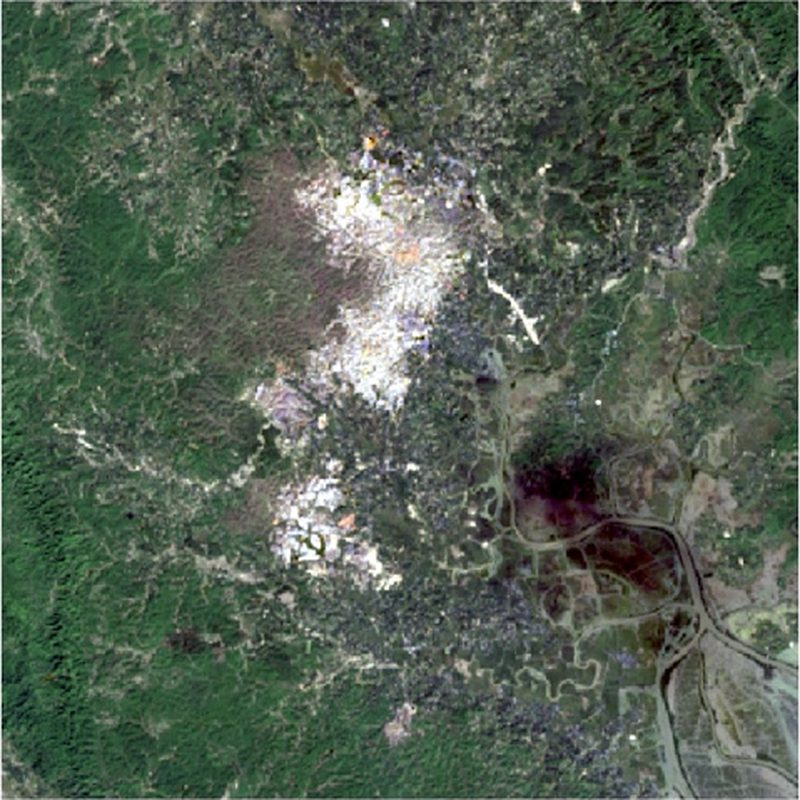
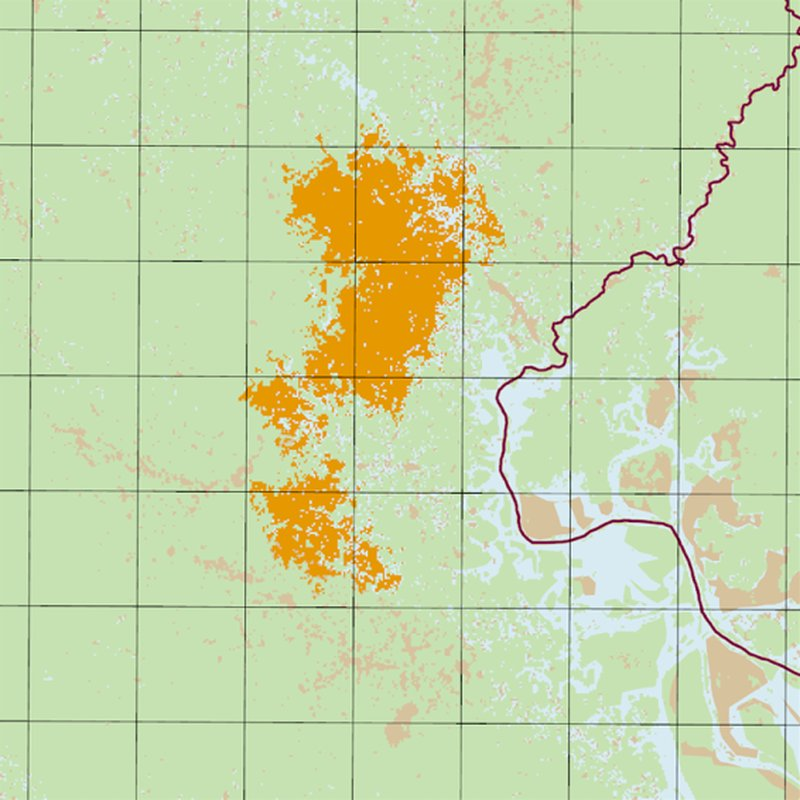

I am an M.S. student in Systems Engineering in the Department of Civil & Environmental Engineering at UC Berkeley. Before Berkeley, I received my B.S. in Geomatics from National Cheng Kung University (NCKU) in Taiwan.
My background spans geospatial technology, sensing, and data-driven engineering, with a curiosity for exploring new technologies and solving real-world problems.
Computer Vision; Data Mining; Data Modeling, Statistics, and System Simulation; Data Science for Energy; Human Mobility and Network Science; Systems Analysis in Transportation; Infrastructure Sensing and Modeling; Civil Systems: Control and Management.
Remote Sensing; Applied GIS and Spatial Analysis; Photogrammetry; Satellite Positioning; Surveying; Cartography; Smart Cities; Data Structure; Machine Learning.

Toy modelEvery road user leaves a different strain signature. Pick one. Pedestrians are the hard case: try zoom and the smoothing filter.
Project recordingFiber-derived traffic replayed in the 3D digital twin.
Processed multi-temporal SAR imagery in Google Earth Engine and ArcGIS to compute fault displacement and surface velocity fields around Berkeley, then built an interactive 3D terrain viewer with Alpha Earth and DEM data to explore deformation zones and potential landslide risk.
Project recordingThe viewer stepping through year-to-year displacement. Left: vertical motion. Right: horizontal motion along the fault, where blue patches line up along the hills.

Worked with photogrammetric and LiDAR point clouds to support 3D modeling for city development; identified and digitized roadside signage in Trimble Business Center and exported shapefiles for GIS workflows.
Toy modelDrag to orbit a street scan, then pull the road signs out of it.

A 24-hour linear program over 133 campus buildings with an auto-sized battery in every building and power sharing within 300 m, built on real hourly data from the UC Berkeley Energy Use Dashboard. Cut weekly cost by 14.2% ($55,056) and CO₂ by 13.8%, and showed that local storage captures almost all of the value.

Surveyed floors 3–7 of Davis Hall on site and built a 3D evacuation network (532 nodes, 1,166 edges), plus an IFC parser that builds it straight from BIM models. Agents slow down in crowded corridors and replan as congestion grows. At full scale, A* expanded 36.5% fewer nodes than Dijkstra and evacuated 3% faster (166 s vs 171.1 s); visualized in 3D with Three.js.
Toy modelClick anywhere in the floor plan to place a person. Compare how much of the building each algorithm searches, then block the corridor with a crowd.
Crowded cells cost more to cross, following the project’s weighting w = w₀(1 + 5ρ).

An event-driven charging simulation of 1,000 EV agents moving through San Francisco, combining Replica mobility data, OpenStreetMap road networks and charging infrastructure, calibrated against real traces using jump length, radius of gyration and waiting time.
Toy modelMore chargers, shorter queues. Drag the slider and watch the waiting cars (orange dots beside each charger) clear.
40 cars, 2 plugs per charger. Blue is driving, green is charging, orange needs a charge.

Rode two main routes across campus at four times of day to collect 31 GPS tracks, then used moveHMM step lengths and turning angles to separate peak from off-peak riding and DBSCAN to find where riders bunch up. Found peaks at 12:00 and 17:00 and four conflict hotspots; a NetLogo model showed conflicts concentrating near intersection corners.
Report dataPick a time of day. Riders move at the measured average speed, weave the way the turning angles showed, and orange rings mark the DBSCAN hotspots.
Schematic map of the campus. Animation runs about 12× faster than real time.

Formulated on-demand delivery as a pickup-and-delivery problem with capacity and precedence constraints on real coordinates. In a 30-courier, 60-order scenario, Tabu Search gave ~36% shorter routes and ~30% faster computation than a genetic algorithm.
Toy modelOne courier, fourteen stops. Start from a random order, then let local search untangle the route one swap at a time.
The demo uses 2-opt swaps on a single route; the real project solved a constrained multi-courier problem.

Classified dry-season Landsat-8 images (2016–2018) and digitized monsoon flood extents from Sentinel-1 SAR (2017–2019). After the August 2017 influx, the camp grew from 1.35 to 17.90 km², replacing vegetation with settlement and bare land, while monsoon floods reached into the camp every summer.
Report dataPick a date and drag the slider to compare the Landsat-8 image with my classification.


Landsat-8Classified